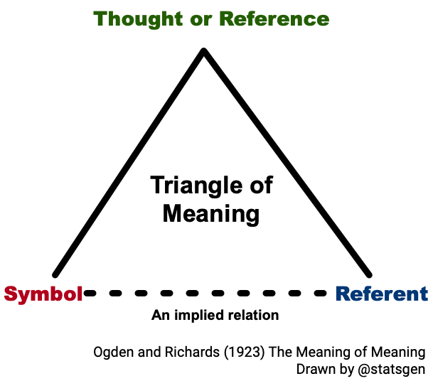
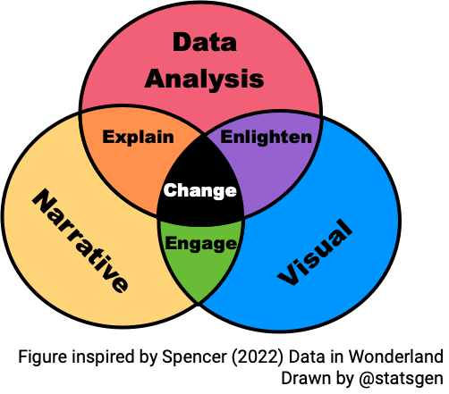

Lecture 1: Basic communication theory and practice
Communicating
To effectively communicate, we must realize that we are all different in the way we perceive the world and use this understanding as a guide to our communication with others.
– Anthony Robbins
Communicating with data
The two words ‘information’ and ‘communication’ are often used interchangeably, but they signify quite different things. Information is giving out; communication is getting through.
– Sydney J. Harris
The Basics of Communication Theory
Communication here refers to human communication
In this section, communication refers to human communication.
Communication is symbolic
Arbitrary nature of symbols is overcome with linguistic rules
Agreement among people about these rules is required to effectively communicate
Meanings rest in people, not words

Communication is a process
Communication is often thought of as discrete, independent acts but in fact it is a continuous, ongoing process.
Linear communication model
Transactional communication model
Communication competence
There is no single, ideal way to communicate
Competence is situational and relational (where, what and who)
Ability to select the most appropriate behaviour in a particular situation
Skill to perform behaviour not just knowing them
Empathy or perspective taking
Cognitive complexity – ability to construct a variety of framework for viewing an issue
Self-monitoring – paying close to your own behaviour and use this to shape your behaviour
Types of communication
Intrapersonal– communicating with one-self
Dyadic/interpersonal– two people interacting
Small group– two or more people interacting with group membership
Public– a group too large for all to contribute
Mass– messages transmitted to large, wide-spread audiences via media
Tutorial
How does your communication strategy change for different types of communication?
Effective communication
Communication doesn’t always require complete understanding
We notice some messages more and ignore others, e.g. we tend to notice messages that are:
intense,
repetitious, and
constrastive.
Motives also determine what information we select from environment
We are influenced by what is most obvious
Rhetorics
The art of effective or persuasive speaking or writing
Rhetorical Triangle
Ethos - Writer. Make it clear why people listen to you Pathos - Audience. Appeal to the audience to listen to you. Engage them. Logos - Context. Audience will put things in context for them. Make sure it will make sense. (Example)
Rhetorical Situation
Writer or Speaker
Purpose
Message
Audience
Context
Writer or Speaker
Purpose
Message
Audience
Context
No one ever made a decision because of a number. They need a story.
– Daniel Kahneman
Maybe stories are just data with a soul.
– Brene Brown
Hans Rosling
Communicating your problem
Asking for help, requires you to communicate what your problem is to another party.
How you communicate your problem, can assist you greatly in getting the answer to your problem.
🆘 Asking for help
Example 1:
Example 2:
I am looking to adjust the size of two separate ggplots within the same R chunk in Rmarkdown. These plots must be different when outputted as a pdf, so defining the dimensions at the beginning of the chunk doesn’t work. Does anyone have any ideas? My code is below.
I am looking to adjust the size of two separate ggplots within the same R chunk in Rmarkdown. These plots must be different when outputted as a pdf, so defining the dimensions at the beginning of the chunk doesn’t work. Does anyone have any ideas? My code is below.
I am looking to adjust the size of two separate ggplots within the same R chunk in Rmarkdown. These plots must be different when outputted as a pdf, so defining the dimensions at the beginning of the chunk doesn’t work. Does anyone have any ideas? My code is below.
Is the data used in this question necessarily for the question?
Do we even have a copy of mydata.csv??
Example 5:
I am looking to adjust the size of two separate ggplots within the same R chunk in Rmarkdown. These plots must be different when outputted as a pdf, so defining the dimensions at the beginning of the chunk doesn’t work. Does anyone have any ideas? My code is below.
For general code questions, I suggest that you post to the community forums rather than Moodle.
Communicating with Data

Summary
Communication is a symbolic, ongoing process that requires getting through to other parties
There is no single ideal way to communicate – communication competence depends on situation and relations but a competent communicator can select and perform appropriate behaviour based on seeing other people’s perspectives and understanding their own behaviour
We discussed about the elements of rhetorics and how it relates to telling a compelling data story
We looked at the case study with communicating your problem to ask for help